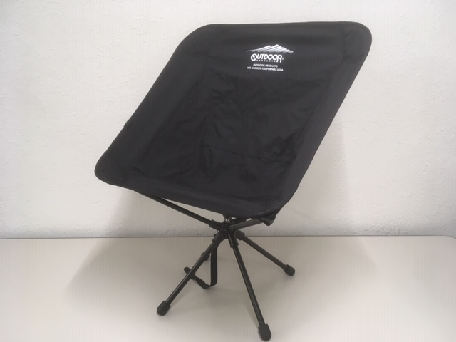
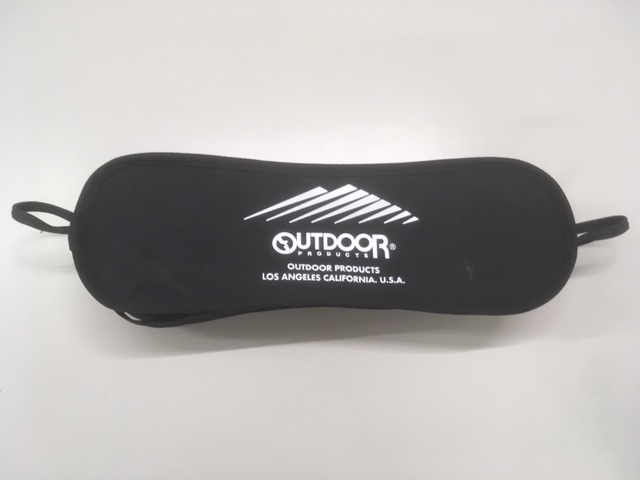
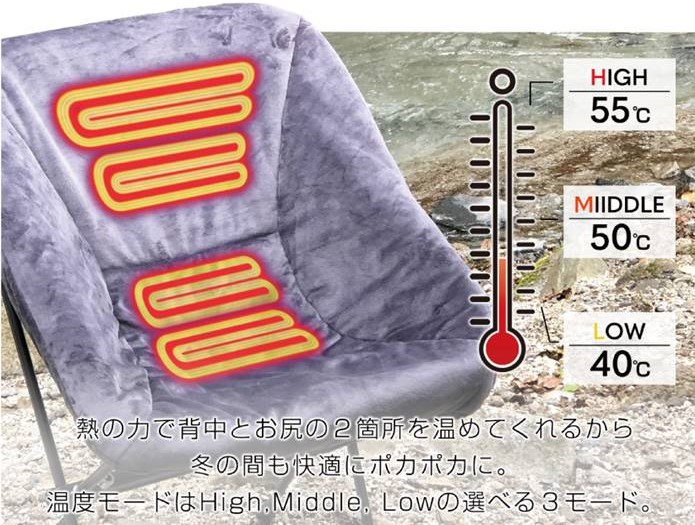

足を広げてロープを引くだけでテントが完成!
ポールを組み立てる作業や、テントにポールを通すような作業は一切不要。
気軽にキャンプを始めてみたい、キャンプフェスやツーリングで設営の時間がもったいない、キャンプの時間はできるだけ遊びに使いたい、そんなあなたにぴったりなテントです。
シングルウォールを採用し軽量性、取扱いやすさに優れたベーシックモデル。
2人でゆったり快適に使用できるサイズ設計、内側から換気調節しやすい大型窓など随所に使いやすさの工夫を施しています。
袋から出して、脚を伸ばして広げます。

テントを持ち上げるようにしながらロープを引っ張ります
ドアと背面窓はどちらも内側からフルメッシュに切り替え可能。内側から換気量を調整することができます。
夏でも風を通して快適に使用できるよう、メッシュの面積を広くとりました。

サイドだけでなく天井からも換気できる設計です。
付属のトップシートを設置することで、換気をしながら雨の侵入も防げます。
フロアには厚手のPE素材を使用。地表から伝わる不快を和らげます。
テントの内側にメッシュポケットを配置。メガネやスマートフォンなど就寝時になくしがちな小物を収納できます。
コンプレッションベルト付きバッグでコンパクトに収納が可能。
フェスなど持ち込める荷物が限られる場合でもコンパクトに収納して運搬することが可能です。
テントを固定するためのペグ、反射材入りストームロープが付属。
視認性を高めたストームロープは夜間のつまずきを防止します。

※製品等の色は、ご使用になるモニターや、設定によって若干の違いが発生する場合があります。
※製品改良のため予告なくデザイン・仕様を変更する場合があります。
※サイズ・重量などの数値には若干の個体差があります。
※テント生産時に耐水圧試験を行い、計測箇所の平均値ではなく、最低値が記載値以上となるように耐水圧を設定しています。
※本製品は結露しやすいシングルウォール構造のため、従来品と比べベンチレーションを大きく設計しています。雨や風の強さによっては雨が吹き込むリスクがあるため、必要に応じてテントの上にタープを張ってください。結露の軽減には、背面窓を開けて換気することも有効です。
--OUTDOOR PRODUCTS BLACK LINE ヘキサタープがおススメです。--
※実際に台風などの安全上のリスクが想定されるような環境では使用しないでください。

BLACK LINEロゴのシンプルデザイン & 持ち運びに便利な軽量、コンパクト設計
 インドアのくつろぎからアウトドア・アドベンチャーへシームレス。

モバイルバッテリー対応 ヒーターチェアカバーも開発予定
BLACK LINEロゴのシンプルデザイン & おすわりした時も可愛い胸ワンポイント
豊富なBLACK LINEシリーズのウエアでご主人様とお揃いも楽しめます